从运动数据恢复不可约三体相互作用的解析规律
论文原文 ↗Recovering Irreducible Three-Body Interactions with Lagrangian Neural Networks
Sena Kalabalık 等｜arXiv:2610.13292，2026｜官方页面｜
如果只观察粒子怎样运动，能否反推出它们之间的相互作用，甚至写出一条简洁的物理公式？拉格朗日神经网络已经被用于多种动力学系统，这篇工作进一步研究必须同时考虑三个粒子几何关系的相互作用。作者以 Axilrod–Teller 三偶极色散项为对象，将已知动能固定、未知势能交给网络学习，结合针对性采样，从加速度数据恢复其径向规律、角度变化和吸引—排斥转换，最后用符号回归提取解析表达。
方法怎样做：已知力学结构固定，网络学习势能
“不可约三体作用”指三粒子的集体效应无法写成三对独立作用的简单相加。Axilrod–Teller（AT）作用就是这样的例子：三个粒子形成三角形，能量随整体尺度约按 r⁻⁹ 衰减，大小和符号还由三角形内角共同决定。紧凑形状与接近共线的形状，可以分别产生排斥和吸引。
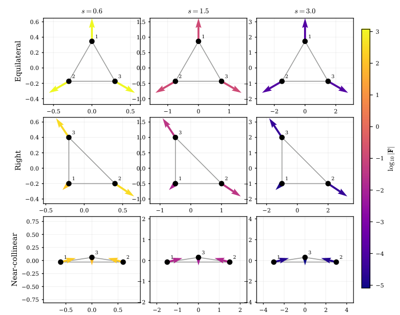
图1｜三角形形状改变作用方向，尺寸增大则使力快速衰减。这两种变化构成网络需要学习的目标。拉格朗日量是“动能减势能”，可以通过欧拉–拉格朗日方程得到运动。一般拉格朗日神经网络让模型学习这个标量；作者利用粒子质量已知这一条件，直接固定动能，仅训练位置相关的势能。网络输出势能，自动微分产生力，再除以质量得到加速度，与参考加速度比较。
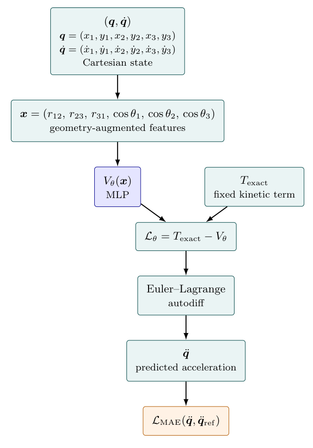
图2｜从粒子坐标提取几何信息，预测势能，再由力学方程计算加速度，将测量目标与模型连接起来。作者在二维三粒子构型中生成位置—加速度样本，将三条边长和三个内角余弦作为输入，训练前馈势能网络。显式给出角度，有助于模型表达随整体形状变化的作用。监督信号是加速度，势能通过其梯度被间接学习。
采样设计同样重要。AT 力随距离约按 r⁻¹⁰ 衰减，较近的构型提供更强的学习信号。作者将较多训练样本分配到这一距离段，同时保留较远构型的覆盖；随机旋转、平移和粒子重标号，使训练包含同一物理关系的多种坐标表示。
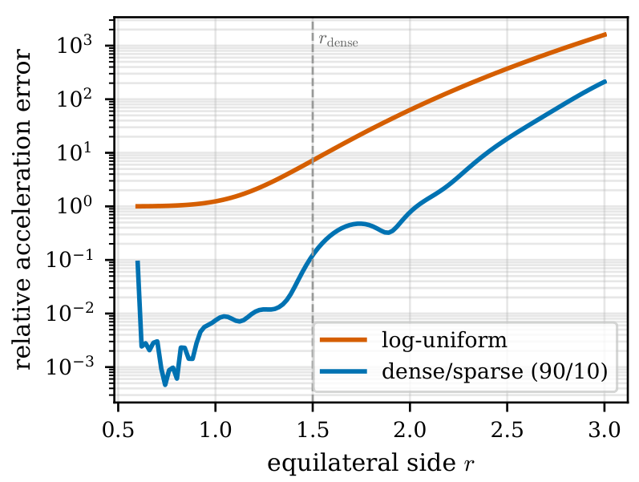
图3｜相比普通对数均匀采样，近区与远区混合采样显著改善加速度预测，说明样本的分配会影响相互作用的学习。主要结果：从势能面、几何规律到运动轨迹
在孤立 AT 系统中，作者固定两个粒子、移动第三个，比较网络与解析模型的势能面和加速度场。网络重现了吸引、排斥区域及其空间结构；图示区域的幅值加权相对误差，势能约为 1.3%，加速度约为 1.1%。
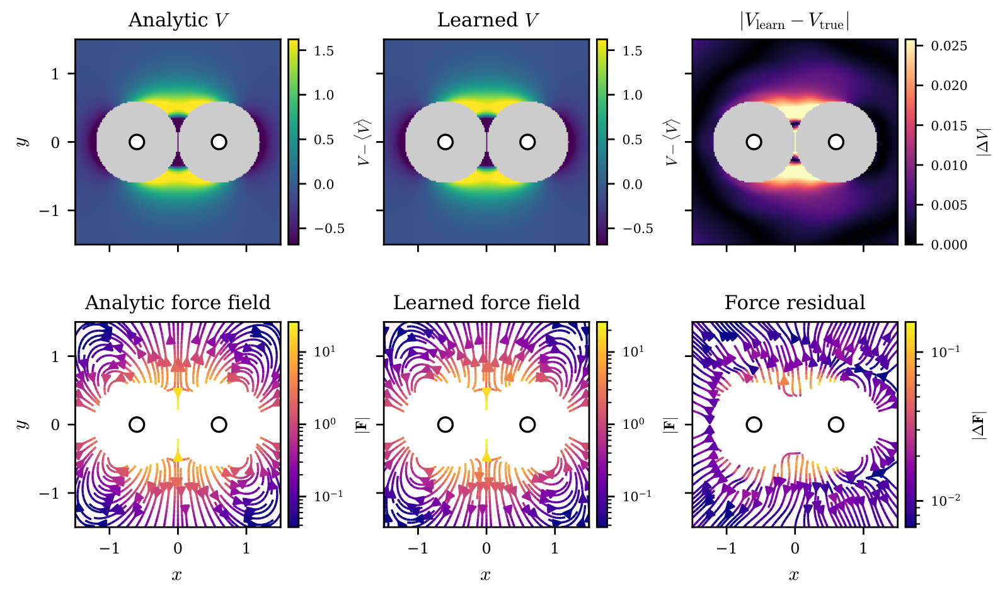
图4｜解析模型、网络预测和差值相对照，展示局部几何怎样形成完整的作用场。保持三角形形状、整体缩放距离，可以进一步检查径向规律。网络在多种典型形状中重现 AT 能量的 r⁻⁹ 缩放和加速度的 r⁻¹⁰ 缩放；改变夹角时，也能跟随势能由正变负的变化。这将数值拟合与三体作用的特征性几何结构联系起来。
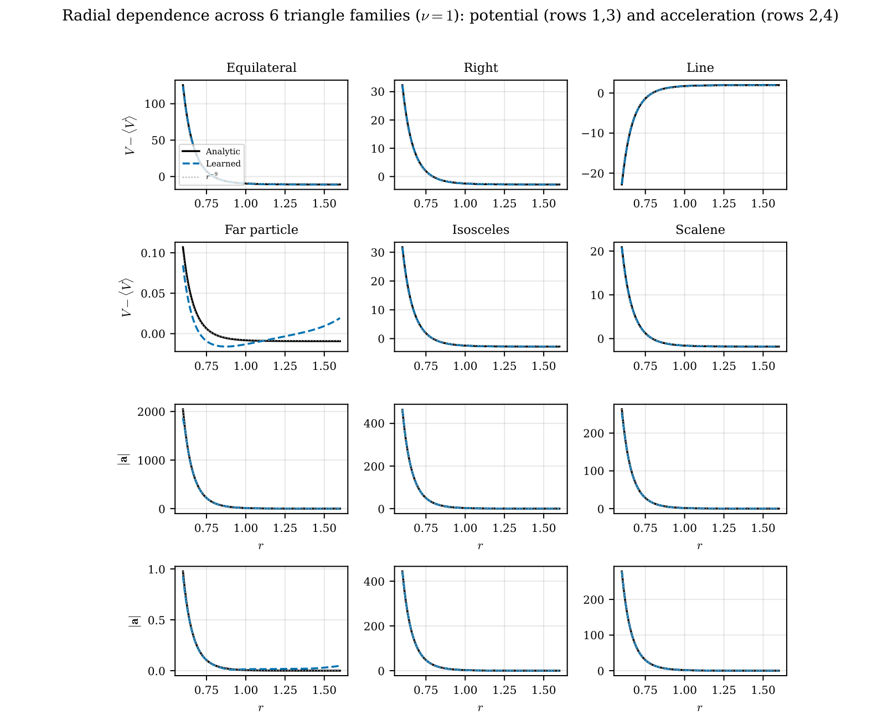
图5｜六种固定三角形形状整体缩放后的势能和加速度，展示学到的径向关系。作者还使用相同几何输入训练纯两体 Lennard–Jones 势和牛顿引力。模型同样恢复相应径向关系，说明这组表示可以随着训练数据学习不同类型的相互作用。
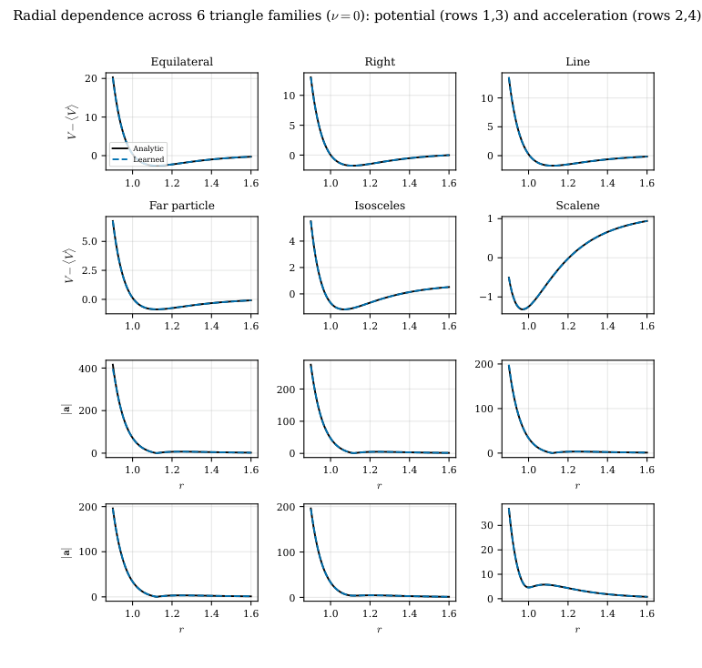
图6｜相同网络在两体 LJ 数据上得到相应的径向势能与加速度关系。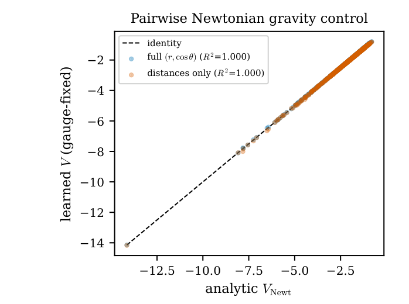
图7｜学习势能与解析引力势的比较，展示几何表示对另一种径向规律的适应。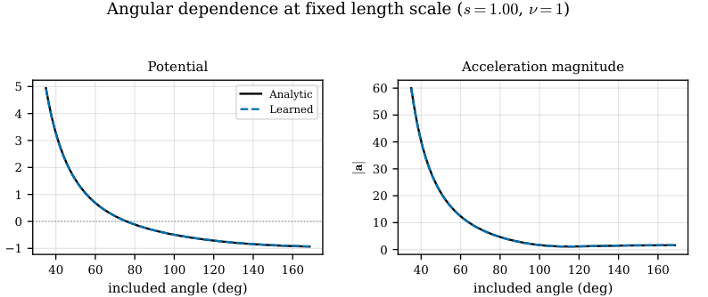
图8｜固定两条边、改变夹角，网络跟随三体作用从排斥到吸引的变化。将网络给出的加速度积分后，作者得到随时间演化的粒子轨迹。吸引后分离、吸引并接近以及排斥分离等运动形态，与解析模型相符；一组随机初态的统计进一步展示轨迹预测随时间的变化。
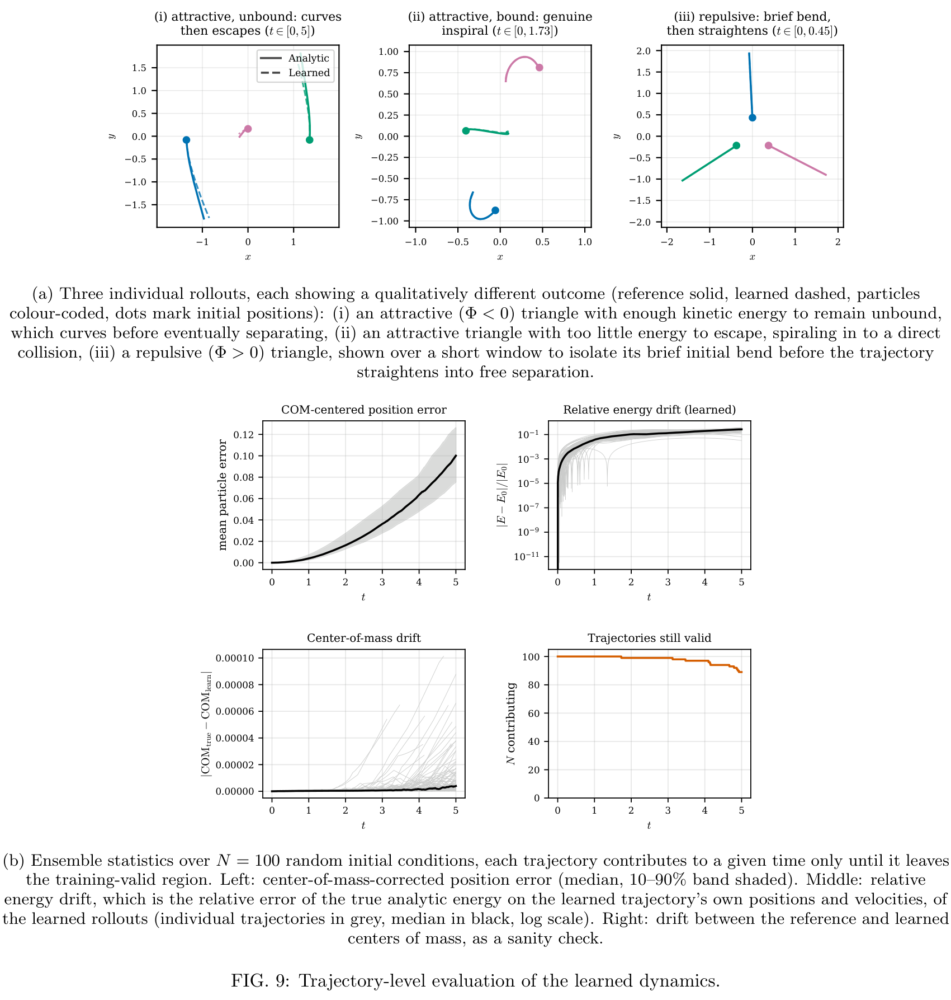
图9｜代表轨迹及随机初态统计，把静态势能学习接到连续动力学预测。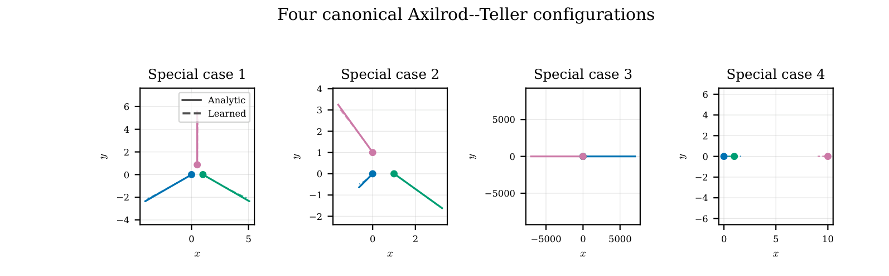
图10｜四种经典 AT 构型的轨迹，展示几何形状怎样对应不同的运动。混合相互作用与符号回归：识别三体贡献，并写回公式
作者进一步把 AT 加入两体 LJ 背景，研究三体项何时能从总运动中被识别。结果表明，当三体信号超过模型残余误差时，完整模型能够恢复它。放大耦合到 ν̃=1.0 后，完整模型相对总加速度的残差中位数约为 0.065，两体模型为 0.162；在氩参考耦合 ν̃≈0.1 下，三体信号约 0.009，低于约 0.045 的两体拟合误差底，此时恢复没有成功。两组实验共同界定了这套模型的可辨识转变。
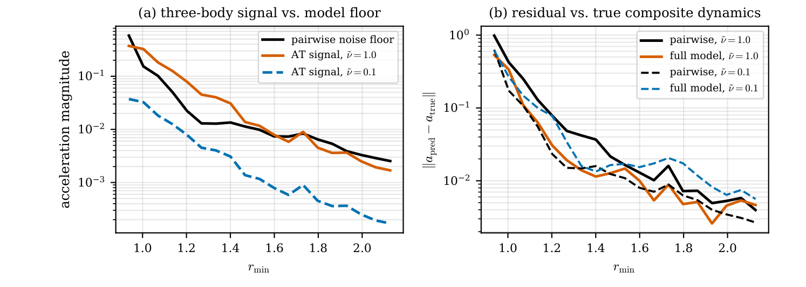
图11｜三体信号、两体拟合误差与完整模型残差的比较，展示耦合强度怎样影响恢复效果。最后，作者用符号回归将网络势能重新表达为公式。程序从代数运算构成的表达式中搜索，寻找既简洁又能描述势能数据的关系，恢复出 AT 的 1＋3cosθ₁cosθ₂cosθ₃ 角度分子、三条距离乘积的三次方分母，以及约为 1 的耦合系数。主体表达与解析 AT 势约有 R²=0.98 的符合度，说明网络中学到的几何关系能够被提取为可解释规律。
研究贡献
这项工作展示了一条从动力学数据到多体作用规律的路线：固定已知结构，针对相互作用信号分配数据，用神经网络学习势能，再用符号回归提取解析形式。它将拉格朗日网络的研究从两体可加作用推进到不可约三体作用，同时以混合背景实验说明信号强度如何影响规律恢复。对物理规律学习而言，模型的表示、数据设计与解析提取可以相互配合，把运动预测进一步转化为对相互作用结构的认识。
原始摘要完整译文
拉格朗日神经网络通过参数化一个标量拉格朗日量，并利用欧拉–拉格朗日方程推导动力学，从轨迹数据学习力学系统，使模型倾向于产生遵循力学变分结构的运动。迄今研究的相互作用均可按两体相加，因此拉格朗日神经网络能否仅从运动中恢复不可约多体相互作用仍是开放问题。我们使用 Axilrod–Teller 三偶极相互作用研究这一问题；它是主导的三体色散项，对三个粒子集体几何的依赖无法表示为任何两体项之和。我们精确规定动能，仅把势能作为粒子间距离和角度的函数来学习。结合一种兼顾构型空间广泛覆盖、同时将训练数据集中在三体信号最强区域的信号感知采样策略，该方法能够仅从加速度恢复相互作用。学得的势能重现了 Axilrod–Teller 相互作用的径向缩放、角度依赖和特征性符号反转，并生成稳定轨迹。将其嵌入两体 Lennard–Jones 势后，我们得以考察其可观测性：当三体项的动力学特征超过残余建模误差时，该项便可被恢复；放大的耦合强度能够清楚做到这一点，而真实稀有气体的耦合强度则不能，从而在两者之间界定了转变范围。最后，在不预设函数形式的情况下，对训练后势能进行符号回归，返回了角度分子、径向规律和耦合常数均保持完整的 Axilrod–Teller 表达式。因此，具有领域特定结构的拉格朗日神经网络能够从轨迹中恢复不可约三体相互作用的闭式规律，为学习结构尚未预先知晓的相互作用规律指明了方向。